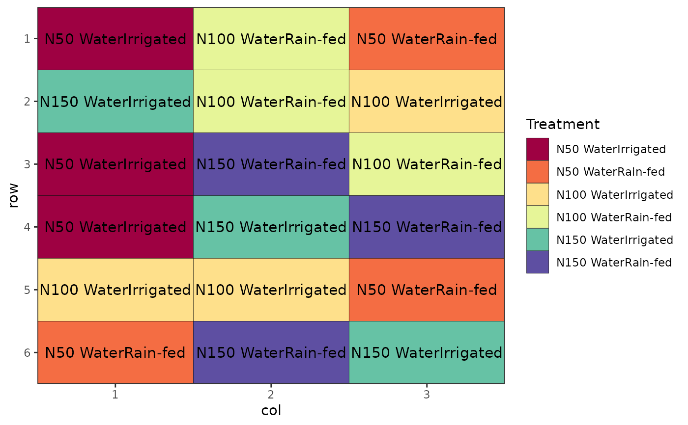

Produces graph of design layout, skeletal ANOVA table and data frame with complete design
Source:R/des.info.R
des.info.RdProduces graph of design layout, skeletal ANOVA table and data frame with complete design
des.info( design.obj, nrows, ncols, brows = NA, bcols = NA, rotation = 0, size = 4, margin = FALSE, save = FALSE, savename = paste0(design.obj$parameters$design, "_design"), plottype = "pdf", return.seed = TRUE, quiet = FALSE, ... )
Arguments
| design.obj | An |
|---|---|
| nrows | The number of rows in the design. |
| ncols | The number of columns in the design. |
| brows | For RCBD only. The number of rows in a block. |
| bcols | For RCBD only. The number of columns in a block. |
| rotation | Rotate the text output as Treatments within the plot. Allows for easier reading of long treatment labels. Takes positive and negative values being number of degrees of rotation from horizontal. |
| size | Increase or decrease the text size within the plot for treatment labels. Numeric with default value of 4. |
| margin | Logical (default FALSE). Expand the plot to the edges of the plotting area i.e. remove white space between plot and axes. |
| save | One of |
| savename | A filename for the design to be saved to. Default is the type of the design combined with "_design". |
| plottype | The type of file to save the plot as. Usually one of |
| return.seed | Logical (default TRUE). Output the seed used in the design? |
| quiet | Logical (default FALSE). Return the objects without printing output. |
| ... | Additional parameters passed to |
Value
A list containing a data frame with the complete design, a ggplot object with plot layout, the seed (if return.seed = TRUE), and the satab object, allowing repeat output of the satab table via cat(output$satab).
Details
If save = TRUE (or "both"), both the plot and the workbook will be saved to the current working directory, with filename given by savename. If one of either "plot" or "workbook" is specified, only that output is saved. If save = FALSE (the default, or equivalently "none"), nothing will be output.
... allows extra arguments to be passed to ggsave for output of the plot. The details of possible arguments can be found in ggplot2::ggsave().
Examples
library(agricolae) # Completely Randomised Design trt <- c(1,5,10,20) rep <- 5 outdesign <- design.crd(trt = trt, r=rep, seed = 42) des.out <- des.info(design.obj = outdesign, nrows = 4, ncols = 5)#> Source of Variation df #> ============================================= #> trt 3 #> Residual 16 #> ============================================= #> Total 19# Randomised Complete Block Design trt <- LETTERS[1:11] rep <- 4 outdesign <- design.rcbd(trt = trt, r = rep, seed = 42) des.out <- des.info(design.obj = outdesign, nrows = 11, ncols = 4, brows = 11, bcols = 1)#> Source of Variation df #> ============================================= #> Block stratum 3 #> --------------------------------------------- #> trt 10 #> Residual 30 #> ============================================= #> Total 43# Latin Square Design trt <- c("S1", "S2", "S3", "S4") outdesign <- design.lsd(trt) des.out <- des.info(design.obj = outdesign, nrows = 4, ncols = 4)#> Source of Variation df #> ============================================= #> Row 3 #> Column 3 #> trt 3 #> Residual 6 #> ============================================= #> Total 15# Factorial Design (Crossed, Completely Randomised) trt <- c(3, 2) # Factorial 3 x 2 rep <- 3 outdesign <- design.ab(trt, r = rep, design = "crd") des.out <- des.info(design.obj = outdesign, nrows = 6, ncols = 3)#> Source of Variation df #> ============================================= #> A 2 #> B 1 #> AB 2 #> Residual 12 #> ============================================= #> Total 17# Factorial Design (Nested, Latin Square) trt <- c("A1", "A2", "A3", "A4", "B1", "B2", "B3") outdesign <- design.lsd(trt) des.out <- des.info(design.obj = outdesign, nrows = 7, ncols = 7)#> Source of Variation df #> ============================================= #> Row 6 #> Column 6 #> trt 6 #> Residual 30 #> ============================================= #> Total 48# Split plot design trt1 <- c("A", "B") trt2 <- 1:4 rep <- 4 outdesign <- design.split(trt1, trt2, r = rep) des.out <- des.info(design.obj = outdesign, nrows = 8, ncols = 4)#> Source of Variation df #> ================================================== #> Block stratum 3 #> -------------------------------------------------- #> Whole plot stratum #> trt1 1 #> Whole plot Residual 3 #> ================================================== #> Subplot stratum #> trt2 3 #> trt1:trt2 3 #> Subplot Residual 18 #> ================================================== #> Total 31